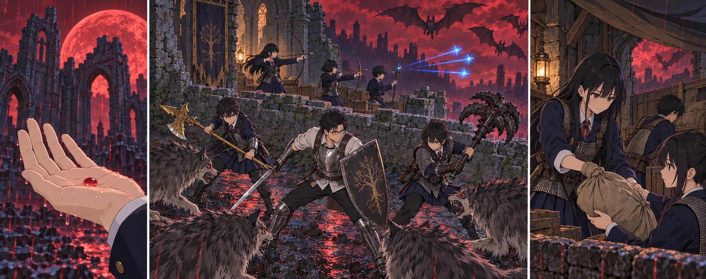

DAY80夜 → DAY81朝 / TURN1−90
赤い雨の中で、持ち場を守る。

結衣「そっちは見えてる。私が言うまで、持ち場を変えないで」
【DAY80｜日があるうちに】翼たち六人は、いつもの採取路へ出た。遠くへは行かない。航の六本の矢と二頭分の獲物、汲んで処理する水。地味な往復に、今日は帰着時刻が書き添えられていた。日が傾く前に六人とも戻ると、結衣は名簿の欄を閉じた。今夜は、先生も攻略組もここにいる。
【日中の調達｜2d6＝2・1＋4＝7】獲物は二頭、二十四食分。華やかな成果ではないが、夜に誰かを食料探しへ出す必要はなくなった。先生は夕食の後、全員を一度集める。主力十三人が外側の接近路を受け、第3チームは荷物と救護の通路を守る。教会の十四人は、雨除け、見張り、点呼を分け持つ。
最初の滴が、陸の手の甲に落ちた。赤かった。血のようだ、と思って袖で擦りかけ、止める。痛みはない。屋根の欠けたところから落ちる粒も、石の上を跳ねる細かな飛沫も赤い。雲の奥に月があり、その輪郭が以前より大きく見えた。先生は雨を掌に受けて眺めた後、飲用水の蓋を確かめさせた。正体は、まだ決めつけない。
【備蓄保護｜2d6＝5・5＋5＝15】風が布を鳴らした。誠は継ぎ目を押さえるより先に、低い石壁の内側へ皆を呼んだ。凛が運ぶ先を指し、翼が荷を受け、真央が通路を空ける。以前なら両腕に抱えて立ち尽くした重さが、今日は一度の持ち替えで渡せた。強くなった身体を、箱と人をぶつけずに運ぶために使っていた。
真央は入口を見た。先生たちの金属が赤く光っている。あちらへ行けば自分も役に立てるのでは、と足が向きかけた時、背後で凛が名前を呼んだ。持ち上げた袋の底が、板の端に引っ掛かっていた。「こっち、お願い」。真央は向き直る。今、自分の手を待っている人が、ここにいる。
雨音の下で唸りが重なった。狼が十二頭。草の陰から一列で来るのではなく、壁の切れ目を探して広がる。先生は入口へ全員を寄せなかった。健太の竜爪の盾と陽太の槍を左右へ分け、その間に自分が立つ。狼が跳び込んだ瞬間、ヒーターシールドを斜めに向け、受けた勢いを横へ流した。剣先は低い位置に置く。
【地上迎撃｜2d6＝1・4＋5＝10】健太の脇へ抜けた一頭を、先生が引き受けた。背中を追いかけるのではなく、狼が向き直れる先へ回る。大地の金の刃がその横を通り、直人の重い爪が、別の影の進路を塞ぐ。陸は柄を短く引き、味方が下がる幅を残した。雪道で覚えた距離が、今度は濡れた草の上でも役に立った。
頭上から甲高い声が落ちてきた。羽ばたきは六つ。大コウモリが、低い壁を越えて内側へ入ろうとしている。前衛の誰かが顔を上げた。「そっちは見えてる」。結衣の声が先に届く。「私が言うまで、持ち場を変えないで」。地上を支える人まで振り向けば、空より先に狼が通る。
花と千夏は弓を持ち上げた。暗い空へ、見えないまま射続けることはしない。羽が欠けた窓の輪郭を横切るところを待つ。風に煽られた一体が姿勢を直す間に、矢が届いた。悠が杖を向けると、青い三つの流星が別々の細い尾を引き、翼の動きに追いすがった。拓海は近づいた影へ短い魔力弾を放ち、飛び込む勢いを止める。
【低空迎撃｜2d6＝6・1＋4＝11】落ちた一体に続いて、もう一体が壁の外へ叩き落とされた。花と千夏はそれぞれ六本を使い、悠と拓海はそれぞれ二度まで術を使った。声を掛け、射線が空いてから次を放つ。地上の八頭が倒れた時、残る四頭の狼は草の向こうへ下がった。六体の大コウモリも、そこで止まった。
先生は追わなかった。敵が見えなくなる方へ一歩出れば、後ろの者も続く。その足を自分から止め、剣を下げる。「外はここまで。負傷の報告」。声が順に返る。盾の後ろ、壁の内側、荷の間。痛みを隠したまま列へ戻る者がいないか、先生は顔も見た。今回は、傷を報告する声がなかった。
颯は奥から返事の数を伝えた。左の鎖骨に手を置きかけて、点呼の札へ戻す。美咲と澪が軍馬のそばにいることも確かめる。馬を戦いへ出すことはしなかった。雨の中で声が遠くなるたび、颯はもう一度、聞こえる声で名前を呼んだ。
【夜明けを待つ】敵の足音が去っても、赤い雨はすぐには止まらなかった。持ち場を交代し、濡れた足を一人ずつ休ませる。湊と葵は回復のために場所を空けていたが、祈る相手は来なかった。使わずに朝を迎えられることを、二人とも残念には思わなかった。
DAY81、空の色が薄くなる。石の隙間を流れる水を、先生は一度しゃがんで見た。もう同じ赤には見えない。その理由を確かめる実験まで、今ここではできなかった。飲み水と雨水を混ぜなかったことを確認し、祝福のそばへ戻る。戦闘が終わった後の休息で、使った術と聖杯瓶を整えた。
三十三人、生存。新たな負傷も、備蓄の損失もない。八百二十八ルーン、矢三百二十六本、食料百四食分、飲用水三リットルが残った。真央が最後の袋を置くと、凛は「助かった」とだけ言った。真央は、今度は入口を見なかった。自分が守った場所が、腕の中にちゃんと残っていた。
先生は九十日目の欄に次の印をつけた。それから、八十一日目の空白へ目を戻す。朝になったばかりの一日を、疲れたまま使い潰したくはなかった。まず休む。そのあと皆に、次は誰と、どこへ行くかを話す。赤月を越えたことと、残りの日付の少なさを、同じ机の上に置くために。
今回の判定記録
| 判定 | 出目 | 補正 | 合計 |
|---|
| 調達 | 2+1 | 4 | 7 |
| 備蓄保護 | 5+5 | 5 | 15 |
| 地上迎撃 | 1+4 | 5 | 10 |
| 低空迎撃 | 6+1 | 4 | 11 |
抽選前の条件 · 抽選結果